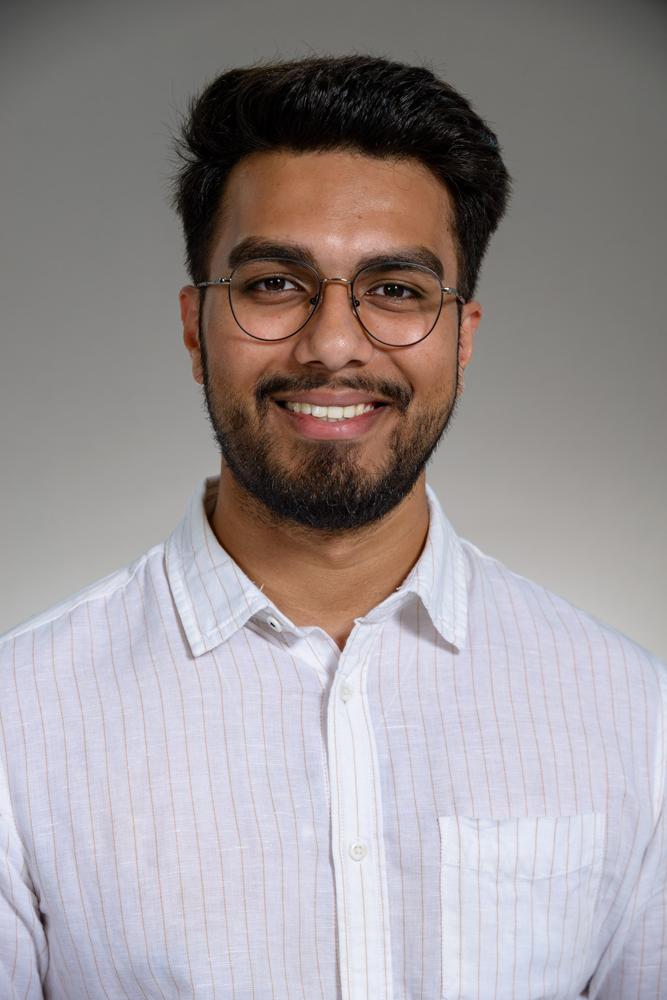

Systems Engineer · Munich, DE
M.Sc. Mechatronics with expertise in MBSE, SysML, and safety-critical system architecture. Two consecutive BMW placements — both rated at the highest performance band. Ready for German-speaking teams.

About
I'm a Mechatronics M.Sc. based in Munich, specializing in Model-Based Systems Engineering. At BMW AG, I completed two consecutive engagements — first as a pre-development UX intern, then as a thesis student — receiving top-band performance ratings in both.
My thesis, Dynamic Suppression: Innovation in Suppression Technologies for Advanced Airbag Systems, involved deriving 35 SysML requirement elements across four hierarchy levels, modelling a complete system architecture with 22 blocks, 5 interface blocks and 12 ports, and running ISO 15288-compliant simulation-based verification in MATLAB/Simulink using Design-of-Experiments in JMP Pro.
Fluent in German (C1) and English (C2). Experienced coordinating across Engineering, Safety, Hardware, and Management — and ready to contribute from day one in German-speaking environments.
Achievements
Technical Strengths
Featured Projects
BMW AG — FIZ Munich · Safety-critical vehicle function
Derived 35 SysML requirement elements from stakeholder and regulatory inputs across four hierarchy levels, modelled a complete system architecture (22 blocks, 5 interface blocks, 12 ports) in MagicDraw/Cameo, and validated the system in MATLAB/Simulink using DOE in JMP Pro — full ISO 15288 traceability throughout.
Approach confirmed for BMW production implementation
BMW AG — Innovationsprogramm, Vorentwicklung Nutzererlebnis
Designed and built a structural lighting rig for scenario-based vehicle demonstrations at BMW's FIZ research centre. Took full ownership from requirements elicitation and CATIA V5 modelling through parts procurement, mechanical assembly, and logistics for mobile deployments across internal Engineering and Management stakeholder events.
Universität Siegen — M.Sc. Mechatronics
Modelled a pick-and-place robot in MATLAB and developed control algorithms for precise end-effector positioning. Simulated system behaviour end-to-end and validated control performance through systematic comparison against reference data, demonstrating positioning accuracy and control robustness.
Recommendations
An exceptionally reliable, motivated and competent emerging professional who delivered results with a structured, analytical and self-directed working style — always on time, always above expectations.
Florian Ober
Team Lead, Pre-development Seat & Restraint Systems · BMW AG
The approach Janmesh developed is already being pursued for implementation — a rare outcome for a Master's project. His ability to clearly present complex engineering problems was consistently impressive.
Dr.-Ing. Jens Peth
Supervisor, Universität Siegen · Institut für Konstruktion
Academic Background
M.Sc. Mechatronics
Universität Siegen — Germany
Oct 2021 – May 2025
B.Eng. Mechanical Engineering
Savitribai Phule Pune University — India
Aug 2016 – Jul 2020
Ready to bring MBSE expertise and BMW-validated performance to your team?
Let's connect.
Available for systems engineering, robotics, and automation roles in Germany and the EU.